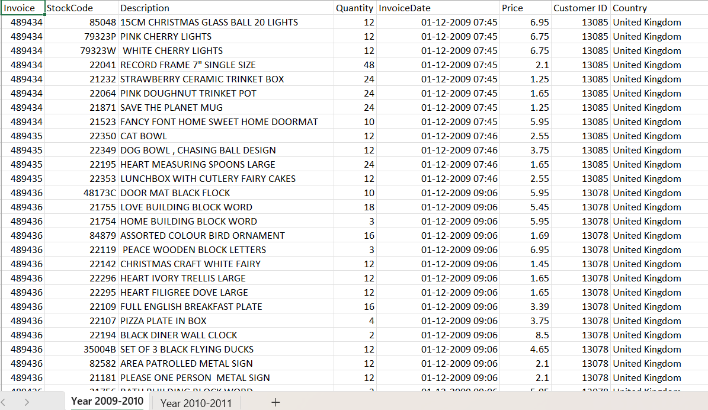

KMeans Clustering
This section breaks down how KMeans was applied to customer segmentation. Below you'll find tiles for code snippets, charts, and tabular data.
You can find the code in this link: Colab Notebook
Data Source The dataset containing online retail transactions from 2009 to 2011. It includes customer purchases, product details, invoice dates, quantities, and pricing information.
Glimpse of data
Data Cleaning We cleaned the data by removing missing entries, dropping invalid records like negative quantities, and ensuring proper data types for dates and numerical columns. This helped maintain data integrity for accurate analysis.
Data Preprocessing We engineered new features like Total sales, Hour, DayOfWeek, Month and Year are created from existing columns. We also created an RFM (Recency, Frequency, Monetary) table and applied scaling to prepare the data for clustering models like KMeans and DBSCAN.
Top 5 sold products
Top 10 country with more customers
Sales metrics by country

RFM Score
The purpose of the RFM score is to segment customers based on their Recency (how recently they purchased), Frequency (how often they purchase), and Monetary (how much they spend). It helps businesses identify and prioritize key customer groups like loyal buyers, at-risk customers, or high spenders for targeted marketing and engagement strategies.
from matplotlib import pyplot as plt
top_10_scores['RFM_Score'].plot(kind='line', figsize=(8, 4), title='RFM_Score')
plt.gca().spines[['top', 'right']].set_visible(False)

Elbow Method
The elbow method helps determine the optimal number of clusters (K) in KMeans clustering. It does this by plotting the within-cluster sum of squares (WCSS) against the number of clusters, and identifying the "elbow point" where adding more clusters gives diminishing returns in reducing WCSS.
#Feature Engineering - Add Total Sales column and convert
data['Total Sales'] = data['Quantity'] * data['UnitPrice']
data['InvoiceDate'] = pd.to_datetime(data['InvoiceDate'], errors='coerce')
data['Hour'] = data['InvoiceDate'].dt.hour
data['DayOfWeek'] = data['InvoiceDate'].dt.dayofweek
data['Month'] = data['InvoiceDate'].dt.month
data['Year'] = data['InvoiceDate'].dt.year
#Create RFM features - recency, frequency, monetary
#Group by Customer ID to calculate Recency, Frequency, and Monetary
rfm = df.groupby('CustomerID').agg({
'InvoiceDate': lambda x: (reference_date - x.max()).days, #Recency: days since last purchase
'InvoiceNo': 'nunique', #Frequency: number of unique invoices
'TotalSales': 'sum' #Monetary: total sales amount
}).rename(columns={'InvoiceDate': 'Recency', 'InvoiceNo': 'Frequency', 'TotalSales': 'Monetary'})
#Display cleaned and engineered RFM data
rfm.head()
#Standardize RFM data
scaler = StandardScaler()
rfm_scaled = scaler.fit_transform(rfm[['Recency', 'Frequency', 'Monetary']])
#SDetermine optimal number of clusters via the Elbow method
inertia = [] #Sum of squared distances to nearest cluster center
k_values = range(1,11) #Testing 1 to 10 clusters
for k in k_values:
kmeans = KMeans(n_clusters=k, random_state=42, n_init=10)
kmeans.fit(rfm_scaled)
inertia.append(kmeans.inertia_)
#Plot the Elbow Method Results
plt.figure(figsize=(10,6))
sns.lineplot(x=k_values, y=inertia, marker='o', color='blue')
plt.title('Elbow Method: Optimal Number of Clusters')
plt.xlabel('Number of Clusters (k)')
plt.ylabel('Inertia (Sum of Squared Distances)')
plt.xticks(k_values)
plt.grid(True)
plt.show()
Silhouette Scores
#Calculate Silhouette Scores
#Initialize variable to store scores
silhouette_scores = {}
#Calculate Silhouette Score for k = 2 to 6
for k in range(2,7):
kmeans = KMeans(n_clusters=k, random_state=42, n_init=10)
labels = kmeans.fit_predict(rfm_scaled)
score = silhouette_score(rfm_scaled, labels)
silhouette_scores[k] = score
#Print Silhouette Scores
for k, score in silhouette_scores.items():
print(f'Silhouette Score for {k} clusters: {score:.4f}')
Results
Silhouette Score for 2 clusters: 0.4870
Silhouette Score for 3 clusters: 0.4961
Silhouette Score for 4 clusters: 0.5376
Silhouette Score for 5 clusters: 0.5367
Silhouette Score for 6 clusters: 0.4759